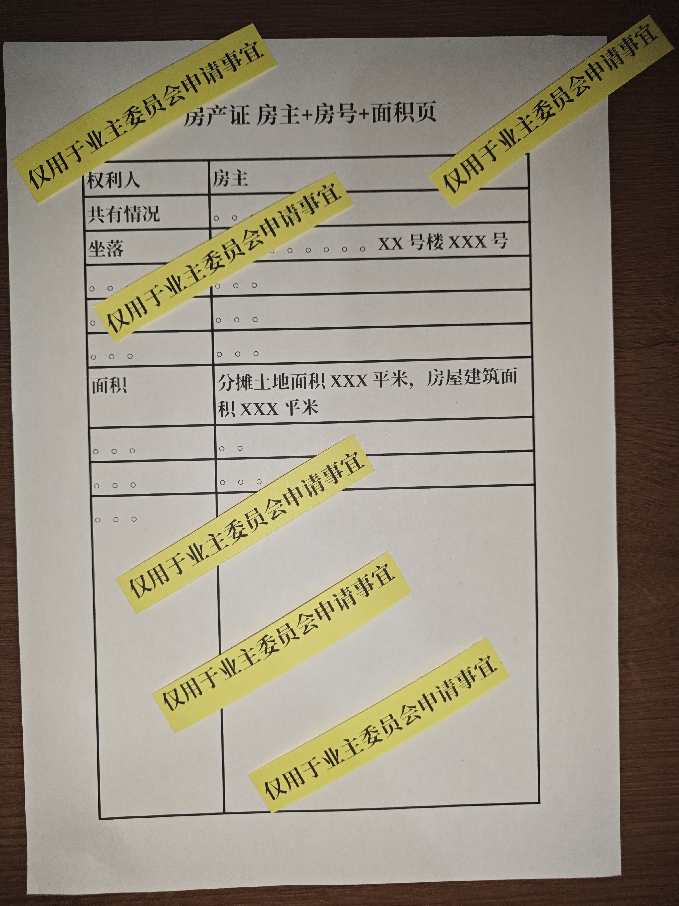
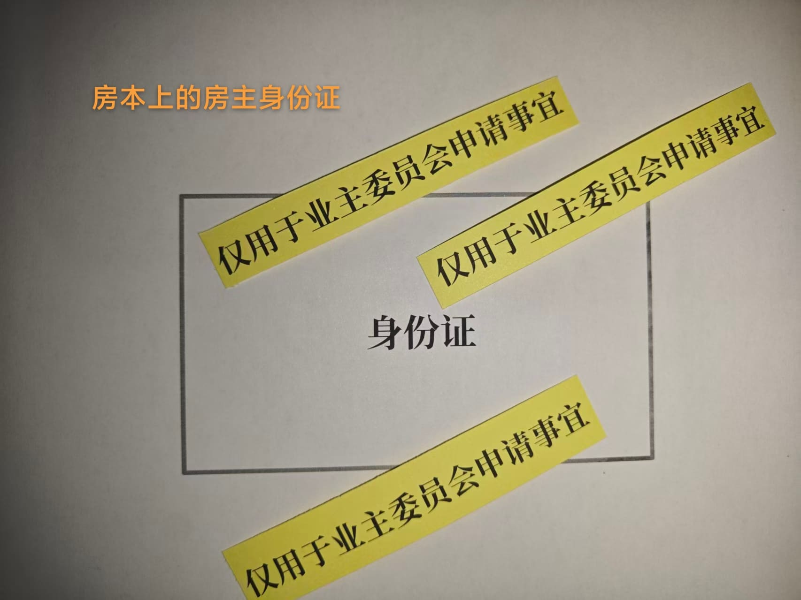
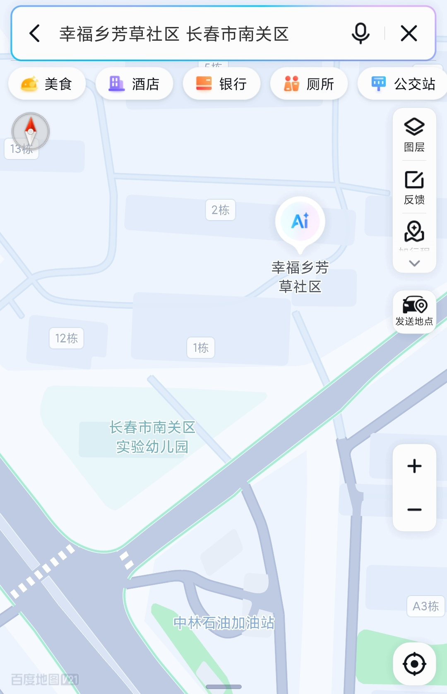

乡政府核实标准是 5%，现在需要更多邻居补交材料
以上数字截至 2026-09-11，由社区网格长核实反馈
👇 看怎么提交材料把材料拍好，微信发给网格长。剩下的社区会核。
房本房主+面积页 + 房主本人的身份证，二者缺一不可。
签字的必须是房本上的名字。如果房本上不是你的名字，请把这篇转给房本上的人。
水印文字：仅用于业主委员会申请事宜。
水印要斜着压在证件的关键信息上（不要遮挡姓名、身份证号、住址），也不要只压在空白处。
⚠️ 材料只发网格长，不要发到群里。避免泄露个人信息。
找不到网格长、或者不确定怎么弄的，往下填一下联系方式，我来帮你对接。


不方便自己交、需要帮忙打水印、不确定该找谁、或者想先问问情况的，可以留下电话，或者是加我微信。
不想把证件拍照发微信的邻居，可以选下面两种。材料只看不收，当场看完还给你。
自己带原件过去，网格长当场查看，不需要拍照、不需要留底。

需要周一到周五白天，而且要凑够一定人数网格长才会跑一趟。
想走这条路的，先在上面留个联系方式，凑够人我统一去约。
群里有几百人，证件照片发出去就收不回来了。
具体要求以社区、乡政府的说法为准。有出入的地方，请以他们为准。
以下流程依据《吉林省物业管理条例》（2021年5月27日通过，2025年5月13日最新修改）
业主代表及社区网格长已赴档案馆，核实一期、二期、三期总建筑面积。这是确认业主投票权数的基础数据。
依据第二十四条：已交付专有部分面积占比50%以上，可成立业主大会。
2272 户中已收集 142 户 业主签字，申请书已于 2026 年 7 月提交至幸福乡政府和芳草社区。
依据第二十五条：5%以上业主，或专有部分面积占比5%以上的业主，可以向街道办、乡镇政府提出筹备成立业主大会的书面申请。街道办收到申请后60日内组织成立筹备组。
社区网格长已逐一联系签字业主，核对房本、身份证和签字人。目前已核实通过 48 户，5% 门槛为 114 户，还差 66 户。
没通过的多数不是"不同意"，而是材料不齐：签字的人不是房本上的名字、电话没接通、电话通了但材料没交上来。补上就能算数。
依据第三十二条：专有部分面积按照不动产登记簿记载的面积计算；业主人数按照专有部分的数量计算。
核实完成后，由乡政府/街道办事处组织成立筹备组。
依据第二十六条：筹备组成员由业主代表、街道办代表、社区党组织/居委会代表和建设单位代表组成，人数为单数。其中业主代表人数不低于筹备组总人数的1/2，组长由街道办指派代表担任。成立后7日内公示成员名单和工作职责，公示不少于7日。
筹备组须在成立后90日内完成以下全部准备工作并召开首次业主大会。
依据第二十八条，筹备组职责包括：
①确认并公示业主身份、人数及专有部分面积
②制定首次业主大会会议方案（时间、地点、形式、内容）
③拟定业主大会议事规则草案和管理规约草案
④确定首次业主大会会议表决规则
⑤制定业主委员会成员候选人产生办法，确定候选人名单
⑥制定业主委员会选举办法
上述内容须在大会召开15日前公示不少于7日。
首次业主大会须表决业主大会议事规则、管理规约，并选举产生业主委员会。
依据第二十九条：首次业主大会应当表决业主大会议事规则、管理规约，并选举业主委员会。业主大会自审议通过议事规则、管理规约之日起成立。
由全体业主投票选举产生业主委员会。
依据第四十二条、第四十三条、第四十四条：
• 业委会由5至11名成员单数组成，任期不超过5年，可连选连任
• 候选人条件：自然人业主，具有完全民事行为能力，热心公益、责任心强、公正廉洁、有一定组织能力，本人及配偶、近亲属与物业服务人无直接利益关系
• 候选人产生方式：社区党组织推荐、居委会推荐、业主自荐或联名推荐
• 依据第四十五条：按得票多少当选，可同时选举候补成员
以下为《吉林省物业管理条例》规定必须公示的环节，保障全体业主的知情权和监督权。
筹备组成立后7日内，在物业管理区域内显著位置公示，公示不少于7日。业主有异议的，由街道办协调解决。
第二十六条首次业主大会召开15日前，公示：业主身份及人数、专有部分面积、会议方案（时间/地点/形式/内容）、议事规则草案、管理规约草案、表决规则、业委会候选人名单、选举办法。公示不少于7日。业主有异议的，筹备组须记录并答复。
第二十八条会议召开15日前通知全体业主，在显著位置公告议题、具体内容、时间、地点、方式，并告知居委会。会议不得就未公告议题以外的事项进行表决。
第三十七条决定作出后7日内，由业委会以书面形式在显著位置公告，并报送街道办备案。大会决定对全体业主具有约束力。
第三十九条业委会选举产生后7日内召开首次会议推选主任、副主任，推选完成后3日内在显著位置公告名单，公告不少于7日。
第四十二条业委会会议决定自作出之日起3日内在显著位置公告。会议召开7日前需公示会议内容和议程，听取业主意见。
第四十八、四十九条业委会须长期向业主公开：议事规则、管理规约、大会和业委会决定、物业服务合同、维修基金筹集和使用情况、工作经费收支情况。业主有权查阅会议资料并询问，业委会须答复。
第四十七条以下事项须经业主大会表决通过，依据第三十一条：需专有部分面积占比2/3以上且人数占比2/3以上的业主参与表决，一般事项经参与表决过半数同意，重大事项经参与表决3/4以上同意。
对现有物业服务不满意，业主大会可以依法解聘并重新选聘物业公司，也可以与物业重新协商服务标准与价格。
依据第七十九条，物业服务人不得擅自提高收费标准。如需调整，必须由业主大会决定。业主大会可以要求物业公示成本、协商合理价格，降低不合理的物业费。
电梯广告、地面停车、摊位租金等公共收益归全体业主所有。业主大会决定公共收益的分配方案，可用于小区建设、补充维修基金或向业主分红。
维修基金的每一笔支出须经业主大会表决。如需筹集维修资金，须经参与表决的3/4以上业主同意。
小区公共设施的老化、损坏需要更新改造的，由业主大会决定方案。
一般事项（如选聘物业、调整物业费、使用维修基金等）：需2/3以上业主参与，参与表决的过半数同意即可通过。
重大事项（筹集维修基金、改建重建、改变共有部分用途）：需2/3以上业主参与，参与表决的3/4以上同意。
成立业委会不等于闹事，是为了让小区的事有人替业主说话。这两份材料写得比较细。